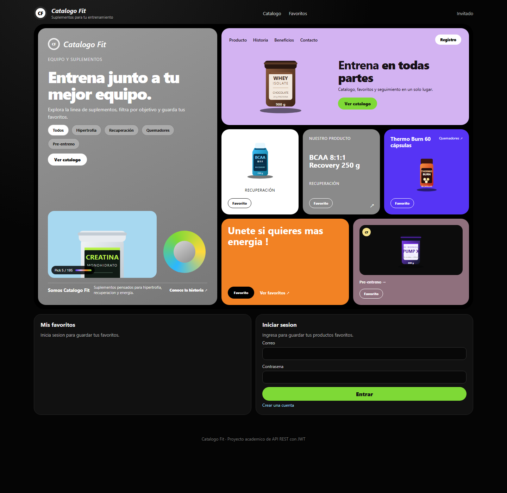
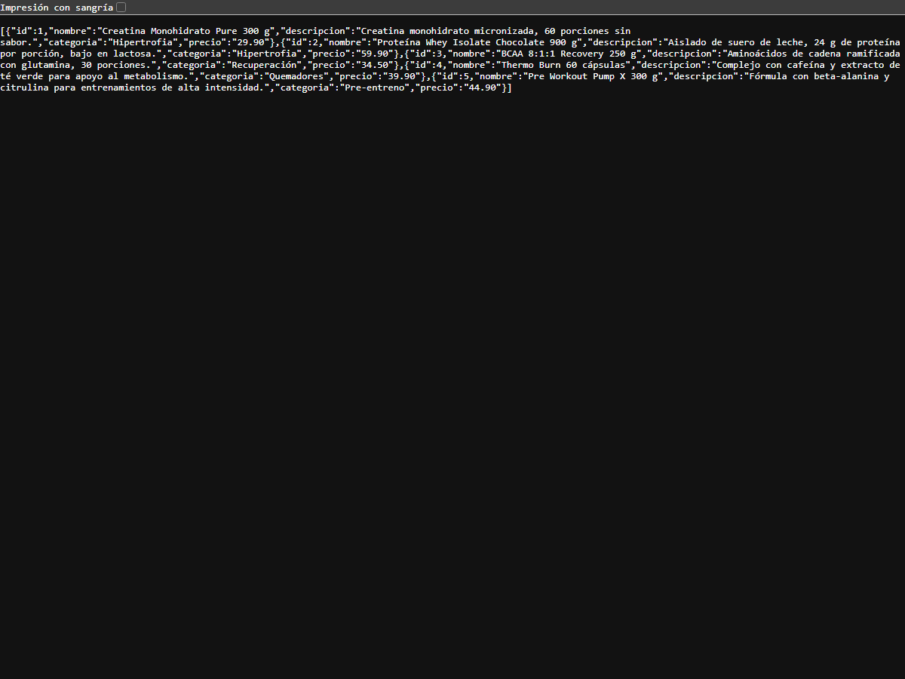

API REST Node.js/Express + PostgreSQL + JWT/roles + frontend React/Vite
COMPLETADO Commit final: fee66dc · Repositorio público: https://github.com/Jreyesi/catalogo-productos-favoritos-api-jwt
| Integrante | Usuario GitHub | Aportes principales |
|---|---|---|
| Jackson Enrique Reyes Ibarra | @Jreyesi | Arranque del repo, JWT y roles, registro/login, script admin, Postman/Newman, base del frontend. |
| Miguel Angel Peñafiel Cadena | @mpenafielc5 | Esquema y semilla SQL, CRUD de productos, favoritos con CASCADE, bento grid y favoritos interactivos. |
Se implementó una API REST para gestionar un catálogo de productos ficticios de suplementos de gimnasio y la lista de favoritos por usuario. El catálogo es público para lectura; las escrituras exigen token JWT y rol de administrador. Los favoritos son privados por usuario y se eliminan automáticamente al borrar un producto.
git clone https://github.com/Jreyesi/catalogo-productos-favoritos-api-jwt.git cd catalogo-productos-favoritos-api-jwt npm ci cd frontend && npm ci && npm run build && cd .. cp .env.example .env docker compose up -d npm run db:init npm run db:admin npm start npm run test:postman
En esta máquina el PostgreSQL nativo ocupa el puerto 5432, por eso el .env local usa PGPORT=5433. El .env está ignorado por Git y el entorno versionado de Postman no contiene secretos.
| Método | Ruta | Acceso | Resultado |
|---|---|---|---|
| POST | /api/auth/registro | Público | 201; siempre crea rol usuario. |
| POST | /api/auth/login | Público | 200 con token JWT; 401 si credenciales inválidas. |
| GET | /api/productos | Público | 200; filtros opcionales categoria, min, max. |
| GET | /api/productos/:id | Público | 200 o 404. |
| POST | /api/productos | Admin | 201 o 400/422. |
| PUT | /api/productos/:id | Admin | 200 o 400/404/422. |
| DELETE | /api/productos/:id | Admin | 204 o 404; elimina favoritos asociados. |
| GET | /api/favoritos | Usuario | 200 con productos favoritos del token. |
| POST | /api/favoritos/:productoId | Usuario | 201 o 404/409. |
| DELETE | /api/favoritos/:productoId | Usuario | 204 o 404. |
| Código | Uso |
|---|---|
| 400 | Campos faltantes, tipos inválidos o ID no numérico. |
| 401 | Sin token, token vencido o credenciales incorrectas. |
| 403 | Token válido de usuario intentando acciones de administrador. |
| 404 | Producto o recurso inexistente. |
| 409 | Registro duplicado o producto ya marcado como favorito. |
| 422 | Precio menor o igual a cero. |
| 204 | Borrado correcto, sin cuerpo. |
Ejecución reproducible con npm run test:postman sobre la API en http://localhost:3000/api. El runner lee las credenciales del .env local y las inyecta como variables de entorno de Newman.
| Bloque | Casos cubiertos | Resultado |
|---|---|---|
| Registro y login | Alta correcta, email duplicado, login correcto e incorrecto, token vencido, sin token. | OK |
| Roles | Usuario no puede crear/editar/borrar productos (403); administrador sí. | OK |
| Catálogo | Listado, detalle, filtros, creación, edición, borrado, ID inválido, precio inválido, campos incompletos. | OK |
| Favoritos | Alta, duplicado 409, listado, borrado 204, producto inexistente 404, aislamiento entre dos usuarios. | OK |
| Persistencia | Reinicio de Node y consulta nuevamente del catálogo en PostgreSQL. | OK |
Evidencia completa: entrega/resultado-newman.txt. Salida resumida:
requests 29 / failed 0 assertions 30 / failed 0 total run duration: 4.5s average response time: 44ms

Bento grid modular inspirado en la referencia: marco negro, columna gris y bloques de color con envases de los 5 productos.

GET /api/productos devuelve los 5 productos semilla.
| Rama / PR | Autor | Commit | Contenido |
|---|---|---|---|
| feature/catalogo-productos · PR #1 | Miguel | 7a1f1d3 | Esquema, semilla y CRUD. |
| feature/auth-roles · PR #2 | Jackson | 5c0f71a | JWT, roles y admin. |
| feature/favoritos · PR #3 | Miguel | 6e06b9c | Favoritos y CASCADE. |
| feature/pruebas-postman · PR #4 | Jackson | e5cb180 | Colección y runner. |
| feature/frontend-bento · PR #5 | Jackson / Miguel | dbd8c4c, 8136592 | Base React y bento grid interactivo. |
| docs en main | Jackson | fee66dc | README completo. |
Todos los PR se fusionaron con --merge para conservar la autoría. La verificación desde copia limpia (clone / npm ci / build / Newman) dio 29/29 peticiones y 30/30 aserciones.
Guion de 12 minutos en entrega/guion-video.md, con minutos, comandos y puntos a mostrar: instalación, base de datos, auth/roles, CRUD, favoritos, pruebas y frontend.